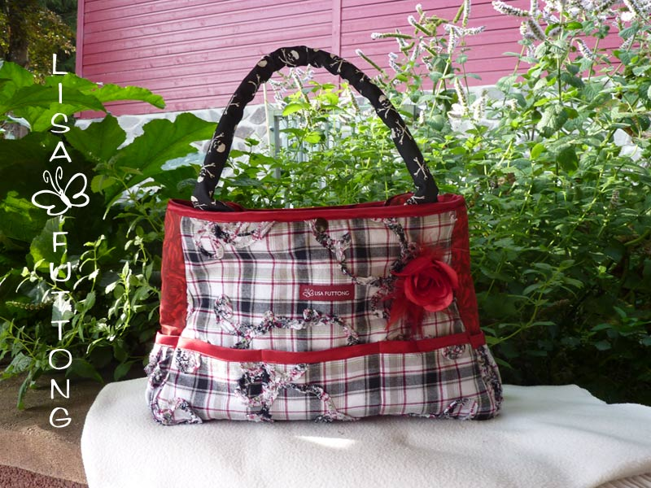
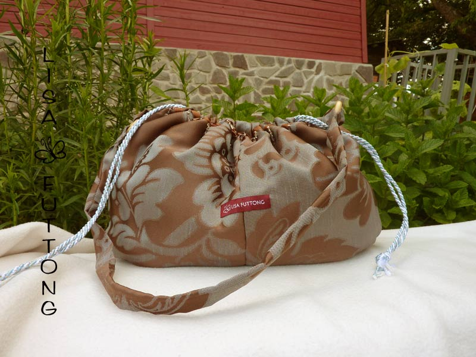

<div id="posts">

    <a href="images/taschen/dtkgtasche.jpg" rel="prettyPhoto[pp_gal]"
       title="Der absolute Schrei für jede Party, DTK-Gedächtnistasche,mit Reißverschluss, verkauft">
        
    </a>

    <a href="images/taschen/ballblue1.jpg" rel="prettyPhoto[pp_gal]" title="Verspielte Handtasche mit Strasssteinchen, Druckknopf zum Schließen,  35,95 €">
        
    </a>

    <a href="images/taschen/eule1.jpg" rel="prettyPhoto[pp_gal]" title="Super Süße Kindergartentasche nicht nur für Vorschulkinder,schließt mit zwei Druckknöpfen, ca. 24x22cm, 24 €">
        
    </a>

    <a href="images/taschen/ladyred1.jpg" rel="prettyPhoto[pp_gal]" title="Ausgefallene Ausgeh-Tasche mit echten Federn, Innen roter Pannesamt,mit Druckknopf zum Schließen, 49,50 €">
        
    </a>
    <a href="images/taschen/karogirl.jpg" rel="prettyPhoto[pp_gal]"
       title="Handtasche, Model:  Karo Girl, mit fünf kleinen Aussentaschen und einer Innentasche,Innenfutter wie Griffe aus schwarzem Stoff mit Totenkopf-Muster, Druckknopf zum Schließen,ca.35x26cm 36,95 €">
        
    </a>
     <a href="images/taschen/glitzerfilz.jpg" rel="prettyPhoto[pp_gal]"
       title="Die etwas andere Filztasche mit Glitzersteinchen,gestrickt, Innenfutter mit süßem Blümchenmuster und Innentasche, 29€">
        
    </a>
    <a href="images/taschen/theater1.jpg" rel="prettyPhoto[pp_gal]"
       title="Elegant und schick, Beuteltasche mit Kordel zum zusammenziehen, Innen blau, ca.36x18cm, verkauft">
        
    </a>
</div>

{% include sub_menu.html %}
